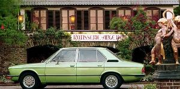
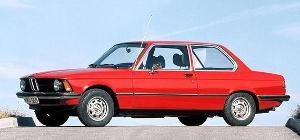
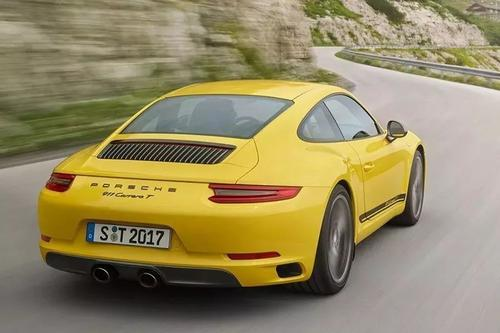
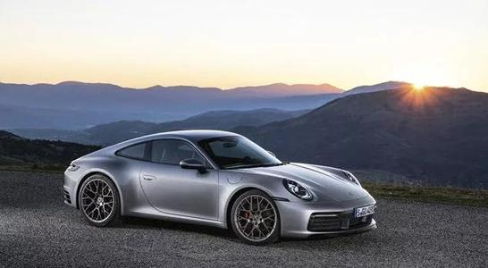

1906年，大保时捷转到Daimler（戴姆勒）车厂的奥地利分公司,担任技术总监。在接下来的十数年中，他设计了多款具有划时代意义的新车，如戴姆勒——奔驰的SS和SSK运动车、汽车联合公司的大奖赛车（GrandPrix Car），在德国汽车工业中都是光辉的篇章。更在1923年晋升为戴姆勒总厂的总工程师。戴姆勒与本茨（Benz）车厂于1926年合并为现在的奔驰车厂。
期间，大保时捷向奔驰建议生产一部大众皆买得起生产型轿车，不过遭到了当时董事会的否决。这使得大保时捷不得不挂冠而去。1931年3月6日，大保时捷在几位投资者的帮助下，在斯图加特建立了一家设计公司，专门开发汽车 ，飞机及轮船的发动机。
四年后（即1935年）原型车诞生，它就是大众车厂的“甲壳虫”。至今它已经连续生产了五十多年并是世界上产量最大的车款。在30年代，大保时捷也为奥迪车厂的前身设计了3款高性能赛车，这几款赛车也被认为是保时捷跑车的前身。
为了保持并提高保时捷的品质， 保时捷于1971年在总厂附近的 魏斯萨赫(Weissach）建成一座现代化的研究开发中心及大型测试场地。

在2011年4月开始的中国上海车展上面，会看到一辆新款的保时捷产品：系列“新能量之车”。这是一款插座充电式的混合动力车型，来自保时捷的首席执行官诺波特·雷瑟佛表示“来自中国，销往中国”。
关于这一款新能量之车的消息最先出现在一月份的时候，但是雷瑟佛在这个星期的时候确认了这一事情。我们比较难以想象基于5系列的长轴距版本在配合了插座充电式混合动力驱动机构的情景。之前我们曾经看过了ActiveHybrid 5的测试情景，宝马也表示有推出混合动力3系列车型的想法。所以如果所有的这些车都使用相关的技术，但是采用不同的名字，那也是很奇怪的事情。